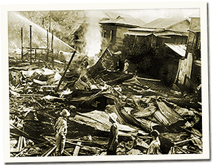

|
j
a v a s c r i p t |
December 13, 1941

Pasay Bombed
The good news: Only a “small” force landed in Legaspi, and our lines are “holding” in the north. The bad news: A total of 200 Japanese planes hit Clark, Baguio, Olongapo, Cabanatuan, and Batangas — a blitz. More planes came in under the clouds and struck Nichols again at 1130. Most bombs missed and landed in nearby Pasay (where Naftaly lives), killing 80, wounding 100 and starting four fires. Everyone agreed it was the worst bombing yet. MacArthur paid homage to the six Filipino pilots led by Captain Jesus Villamor who downed 2 out of 54 bombers over Batangas with their wire-braced P26 ‘Peashooters’ — the scout planes. First Lieutenant Boyd Wagner was commended for downing 2 and strafing 12 in Aparri. Our bombers did strike back at the invaders in the north but the results weren’t decisive. In fact, an exodus of civilians from Lingayen is on. Clark Field couriers I talked with today said only 37 men were defending the airfield. “Three of them even arrived without bayonets,” said one. A lack of equipment probably explains the slow uptake of volunteers. Much was en-route when the Japanese attacked ahead of MacArthur's schedule. We received nothing in October and just a trickle in November despite Mac’s best efforts. Manila was quiet for the rest of the day. Slept early as radio reception was poor. |
|
|
|
|